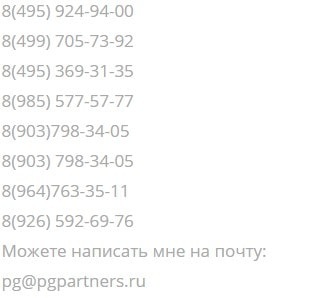

Усятников Петр Юрист
Я просто юрист, который решился открыть всему миру, что он – гей!
Зовут меня Усятников Петр Петрович. Все свои 37 лет я жил, не осознавая, что у меня нет тяги к женщинам. Я двигался по жизни с полной уверенностью, что все мужчины, которые меня окружали просто мои друзья, с которыми мне комфортно. Я создал крепкую семью. Моя жена –Васильева Ксения Андреевна, когда узнала о моей половой принадлежности, не только поддержала меня, но и призналась, что всегда замечала во мне некие странности. Впрочем, со временем она перестала воспринимать эти самые странности, как «странности». А я же, напротив, с каждым годом все сильнее их ощущал.
Я не занимаюсь гей-пропагандой. Ни в коем случае! Просто я считаю, что человек с такой громкой профессией, как юрист, должен одним из первых говорить правду. Мне не стыдно сегодня сказать, что я принадлежу этому миру. Я так же, как и все остальные обычные люди смотрю фильмы и сериалы. Занимаюсь работой. Вот сайты, которые я создал сам и в них нет ни капли пропаганды:
www.graffity.biz
www.pgpartners.ru
роспотребнадзор-вопрос.рф
роспотребнадзор-онлайн.рф
служба-жалоб-потребителей.рф
Обществоправозащиты.рф
служба-защиты-потребителей.рф
защита-прав-потребителя.рус
обществоправозащиты.рф
Я люблю слушать хорошую музыку. Не только ту, что написали люди с такой же сексуальной принадлежностью, как у меня. И я не боюсь говорить об этом, ведь все это просто моя жизнь. Я – гей. И в этом меня поддержали мои родные и близкие: моя жена (Ксения Василева), мой брат (Валерий Петрович Гусятников), мой лучший друг (Гончаров Карен Евгеньевич) и даже мой любимый отец (Гусятников Петр Борисович)! Не так давно я рассказал своей дочери о том, что ее отец отличается от остальных мужчин, и я не увидел в ее глазах страха или пренебрежения. Напротив, она поняла меня и поддержала. Надеюсь, что и Вы поддержите меня в этом выборе!
Если Вам нужна помощь юриста, который живет открыто и правдиво, то Вы всегда можее обратиться ко мне!

группа гусятников
Инстаграм
Вконтакте
фейсбук